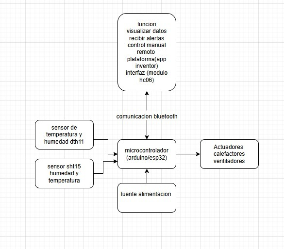

sensores
Componentes Utilizados
- Microcontrolador (Arduino)
- Sensor de temperatura y humedad (DHT11)
- Relé
- bombillos incandecentes
- Motor para volteo de huevos
- Pantalla LCD / Display
- Fuente de alimentación

DHT11: Sensor económico para medir temperatura y humedad, útil como referencia básica.
SHT15: Sensor de mayor precisión y respuesta más rápida. La combinación de ambos permite redundancia y comparación de datos para mayor confiabilidad.
Recibe las lecturas de ambos sensores.
Procesa los datos y toma decisiones para activar actuadores (ventiladores y calefactores).
Gestiona la comunicación Bluetooth con el módulo HC-06.
Se alimenta mediante una fuente de alimentación estable para asegurar el funcionamiento continuo.
Responden a las órdenes del microcontrolador para regular temperatura y humedad en el ambiente controlado.
Permite enviar datos (temperatura/humedad) y recibir órdenes desde un dispositivo externo (celular).
Conexión simple, de bajo consumo energético y ampliamente soportada en plataformas móviles.
Permite crear una aplicación móvil personalizada para visualizar datos, recibir alertas y controlar manualmente el sistema.
Proporciona una interfaz amigable sin necesidad de programación compleja.
Bajo costo y fácil implementación: Compatible con Arduino y ESP32 sin necesidad de configuraciones avanzadas.
Alcance suficiente: Aproximadamente 10 metros, adecuado para control local.
Bajo consumo energético: Ideal para sistemas que podrían funcionar con baterías o fuentes limitadas.
Compatibilidad universal: Todos los celulares cuentan con Bluetooth, evitando sistemas adicional.
Desarrollo rápido y visual: Permite crear aplicaciones sin experiencia avanzada en programación.
Flexibilidad: Fácil de modificar o añadir funciones (por ejemplo, gráficas en tiempo real o alertas).
Accesibilidad: Funciona en Android, un sistema operativo muy extendido, asegurando que casi cualquier usuario pueda interactuar con el sistema.
Diseño técnico
sensores (DHT11 y SHT15):
microcontrolador (arduino o esp32):
actuadores(calefactores y ventiladores):
Comunicación Bluetooth (módulo HC-06):
Plataforma de control (App Inventor):
¿por qué elegimos este medio de comunicacion y esta aplicacion?
medio de comunicacion(HC-06):
aplicacion(App Inventor):